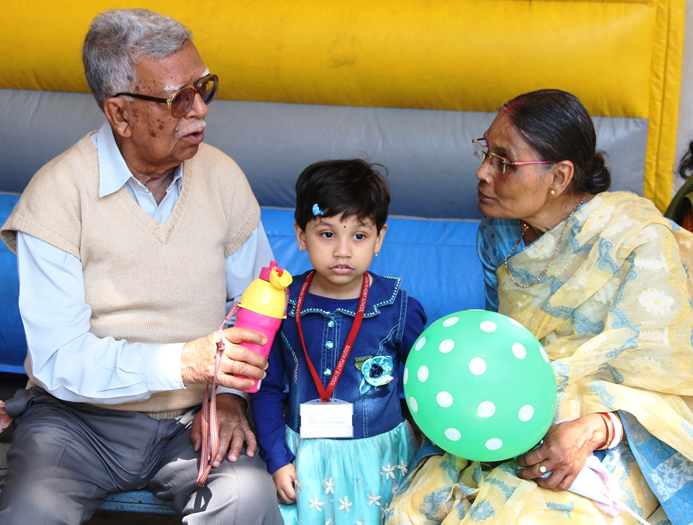
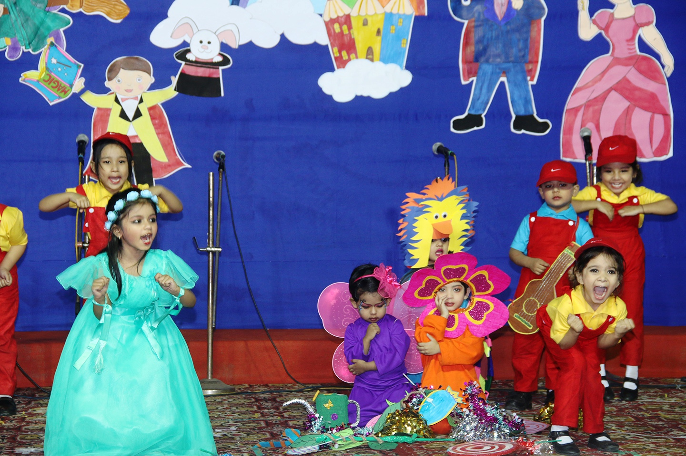
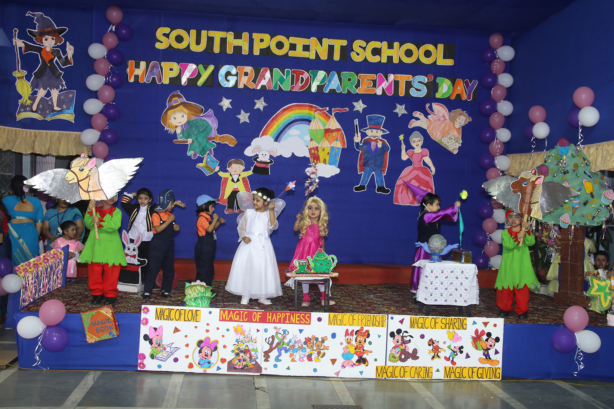
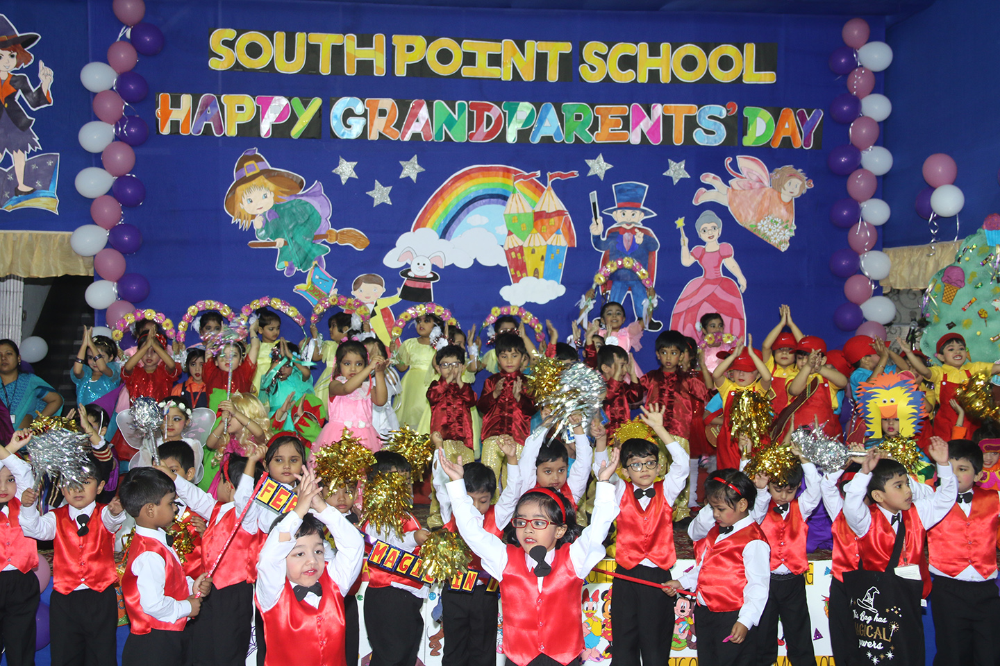
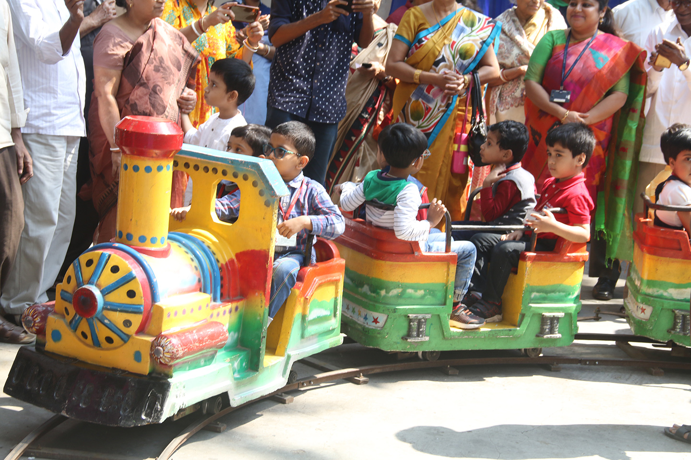

Posted at Date: March 2, 2018
Photo by : Sandip Dutta
Grandparents’ Day celebration at the South Point School premises
South Point Nursery children made a colourful presentation, ‘It’s called Magic’, celebrating Grandparents’ Day at the School premises on Friday. The show cast a magic spell on the audience. The tiny tots of Nursery-I transformed the stage into a magical kingdom. The Nursery choir sang toe-tapping songs with dainty dancers performing on stage, some choreographed to recorded music and others to live singing by the choir. The show conveyed the message that the world is filled with magic. After the show, there was a fun fiesta when grandparents treated themselves and their grandchildren to mouth-watering snacks available in specially set up food stalls. There were interesting games for the little ones and a toy train was in hand to give the children a taste of joy rides. The Day has become a regular part of the school calendar, celebrating the special bond young ones share with their grandparents and validating the crucial role grandparents play in shaping the lives of their grandchildren.

A South Point Nursery student with her doting grandparents, celebrating the Grandparents’ Day at the School premises on Friday.

South Point Nursery children presented a ballet, “It’s called Magic”, celebrating the Grandparents’ Day at the School premises on Friday, transforming the stage into a magical kingdom.

South Point Nursery children presented a ballet, “It’s called Magic”, celebrating the Grandparents’ Day at the School premises on Friday, transforming the stage into a magical kingdom.

South Point Nursery children presented a ballet, “It’s called Magic”, celebrating the Grandparents’ Day at the School premises on Friday, transforming the stage into a magical kingdom.

South Point Nursery children enjoying a toy train joy ride while celebrating the Grandparents’ Day at the School premises on Friday.
South Point Nursery children had gala time while celebrating the Grandparents’ Day at the School premises on Friday.
Top Stories

Calcutta Sports Journalists' Club requests the pleasure of your company at its annual awards functionMore...

আবারও নতুন চমকে অভিনেতা সুদেশ কল More...

The President & members of the Institute of HYDT Research and Education center celebrated 'HYDT Day' Health awareness programme at Science City Mini Auditorium More...